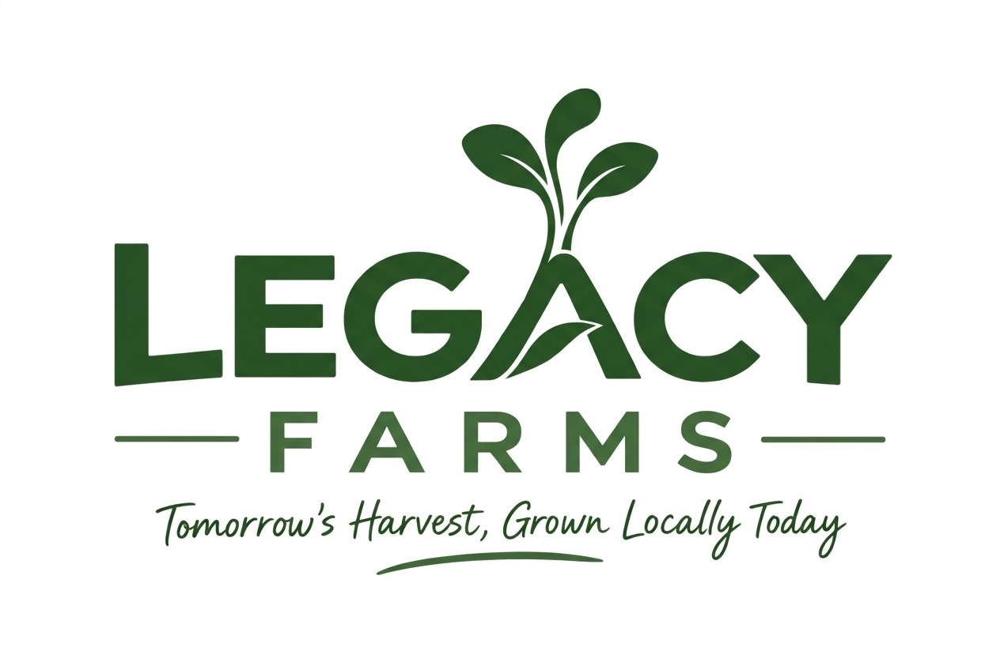

Hyper-local, 100% natural superfood microgreens harvested fresh and delivered to your doorstep. Up to 40x more nutrients than regular veggies!
🚀 Now planting for our next Woodhaven delivery cycle: Saturday Morning. Order cut-off is Tuesday at 9:00 PM to allow for seed germination.
Step 1: Secure Your Harvest Box
Click the sign-up button above to claim your neighborhood slot. We grow exclusively to order each week to ensure zero food waste and perfect freshness.
Step 2: Saturday Porch Drop (The Cooler Policy)
Every other Saturday morning, your fresh greens are harvested and packed. Please leave a small cooler or insulated bag out on your porch on Friday night—we will pop your fresh clamshells straight inside to shield them from the weather!
Step 3: Simple Mobile Pay
No complex recurring credit card sign-ups. You simply send your payment via Venmo or Cash App on Saturday morning after your box arrives.
| Harvest Subscription Box | What You Receive | Price Per Saturday Delivery |
|---|---|---|
| 🟢 The Single Box Choice | Two 2oz Clamshells of your chosen variety loop | $12 / box |
| 🔥 The Double Box Deal | Four 2oz Clamshells dropped to your porch | $20 total (SAVE $4) |
| 👑 The Triple Box Family Plan | Six 2oz Clamshells dropped to your porch | $28 total (SAVE $8) |
▪ Controlled Indoor Growing: Cultivated entirely indoors inside a hyper-clean, climate-controlled environment. Free from bugs, outdoor pollution, and unpredictable weather.
▪ Soil-Free Harvesting: All crops are cleanly clipped well above the soil line. Zero dirt or growing media ever enters your kitchen container.
▪ Pure Water Only: Grown utilizing filtered drinking water with absolutely zero chemical pesticides, sprays, or fertilizers.
▪ The Porch Swap: Delivered in sanitized, temperature-shielded packing to protect quality from the Indiana weather.
🥤 The 5-Second Smoothie Boost
Toss a heavy handful of Sweet Pea or Broccoli shoots directly into your morning fruit blender. They vanish completely into the fruit flavor while packing a massive nutrient punch.
🥪 The Premium Sandwich Crunch
Ditch soggy shredded lettuce. Layer a thick bedding of crunchy Sunflower shoots inside your wraps, burgers, or sandwiches for an unbeatably fresh crisp.
🥗 The Ultimate 2-Minute Salad Base
Mix equal parts Sunflower and Pea shoots, toss lightly with cherry tomatoes, olive oil, and a splash of balsamic dressing for a gourmet side salad.
🌮 Taco, Burger & Dinner Toppers
Throw a raw crop of peppery Daikon Radish microgreens right over steaks, tacos, or hot take-out pizza. The ambient heat softens the stems perfectly without destroying vital enzymes.
"Tomorrow's Harvest, Grown Locally Today"
We wanted to grow something healthy for our own family at home. That is how Legacy Farms started.
I’m a diesel technician by trade, so I’ve always enjoyed figuring out how things work, solving problems, and finding ways to make things better. When I decided to build Legacy Farms, I took the same approach—learning as I went and building the farm one piece at a time.
From the website and brand to the growing systems behind the farm, everything has been built from the ground up with one goal in mind: grow fresh, nutritious microgreens that we’re proud to put on our own table.
What started as something for our family quickly became something we wanted to share with the people around us.
🤝 Community First: Our family has been part of the McCordsville community for years, and youth sports have given us the opportunity to spend a lot of time with local kids and families.
That connection is a big part of why we want Legacy Farms to be about more than just what we grow. As we grow, our goal is to give back to the local youth leagues, schools, and families that make this such a great place to call home.
For now, we’re starting small, growing locally, and learning as we go. The goal is simple: grow fresh microgreens and make it easy for local families to add something healthy to their everyday meals.
For now, we’re starting right here in Woodhaven, one family at a time.
We’re not trying to be a giant corporate farm. We’re trying to build something local, personal, and worth being proud of.
We currently deliver exclusively to the Woodhaven neighborhood to keep our routes tight and our crops perfectly fresh. However, we love feeding new communities!
🚚 Neighborhood Expansion Leaderboard:
🎯 Don't see your neighborhood? Join the waitlist below. Once 10 households from your immediate community sign up, we officially build and unlock your Saturday delivery route!
If you live in a surrounding McCordsville or Geist area, join our expansion waitlist below.
Join the Neighborhood Waitlist